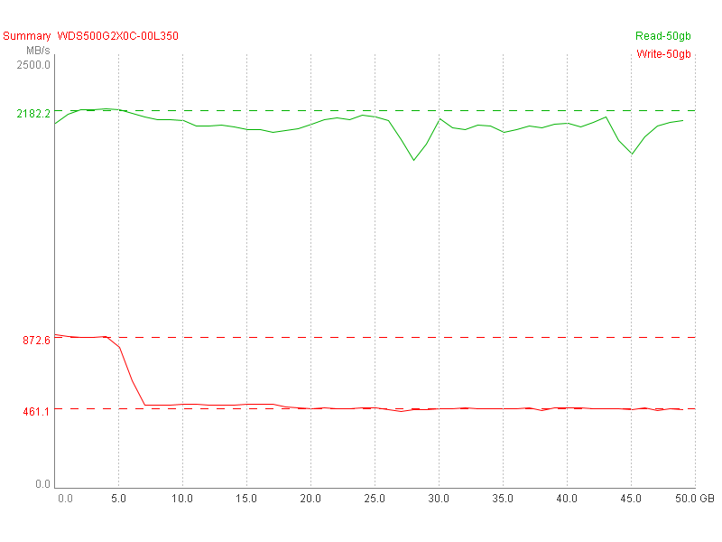
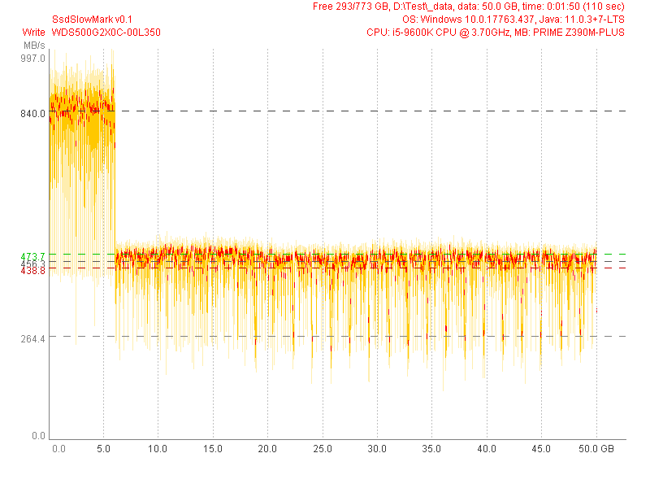
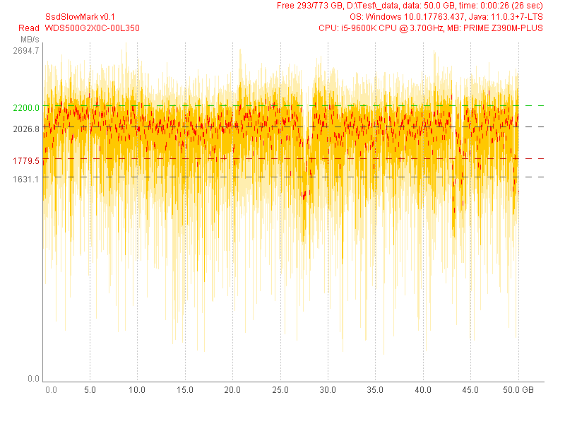

WDS500G2X0C-00L350 (Test 50 GB) |
|
| SsdSlowMark v0.1, CPU: i5-9600K CPU @ 3.70GHz, MB: PRIME Z390M-PLUS, OS: Windows 10.0.17763.437, Java: 11.0.3+7-LTS | |
| Read Performance | Write Performance |
avg.max: 2026.8 MB/s, 97.5% (48.8 GB)
mid: 1631.1 MB/s, 36.6% (18.3 GB)
min: 221.1 MB/s, 0.0% (0.0 GB)
typ.max: 2200.0 MB/s, 93.6% (46.8 GB)
typ.min: 1779.5 MB/s, 91.1% (45.6 GB)
|
avg.max: 840.0 MB/s, 12.0% (6.0 GB)
mid: 456.3 MB/s, 84.7% (42.4 GB)
min: 264.4 MB/s, 5.3% (2.7 GB)
typ.max: 473.7 MB/s, 84.0% (42.0 GB)
typ.min: 438.8 MB/s, 85.0% (42.5 GB)
|
|  | |
|  | |
|  | |